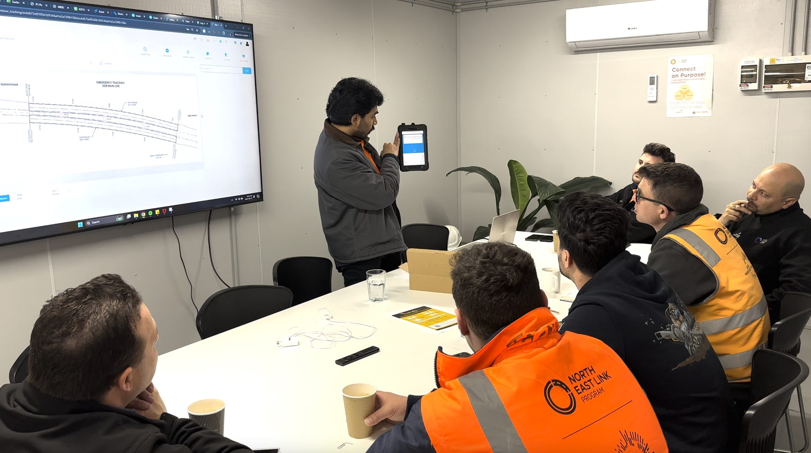
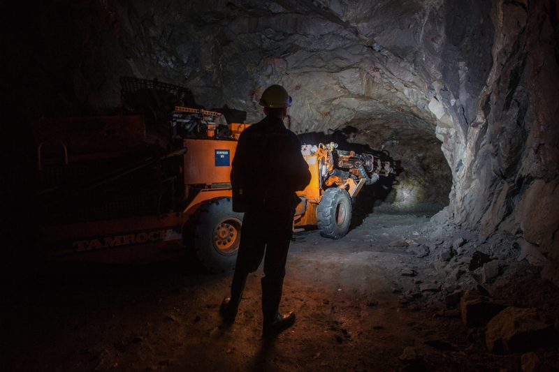
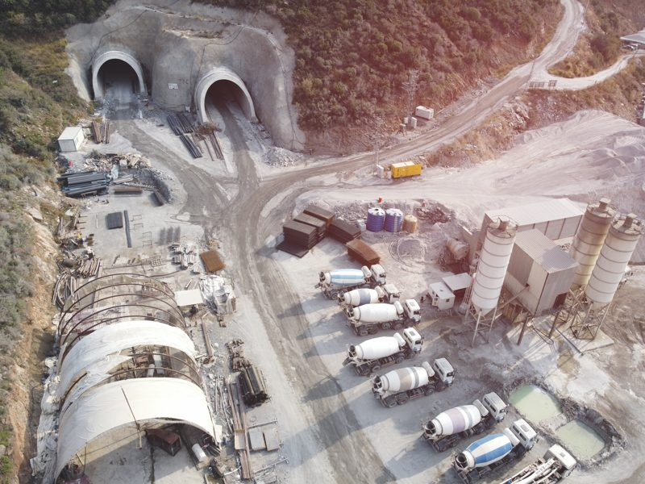
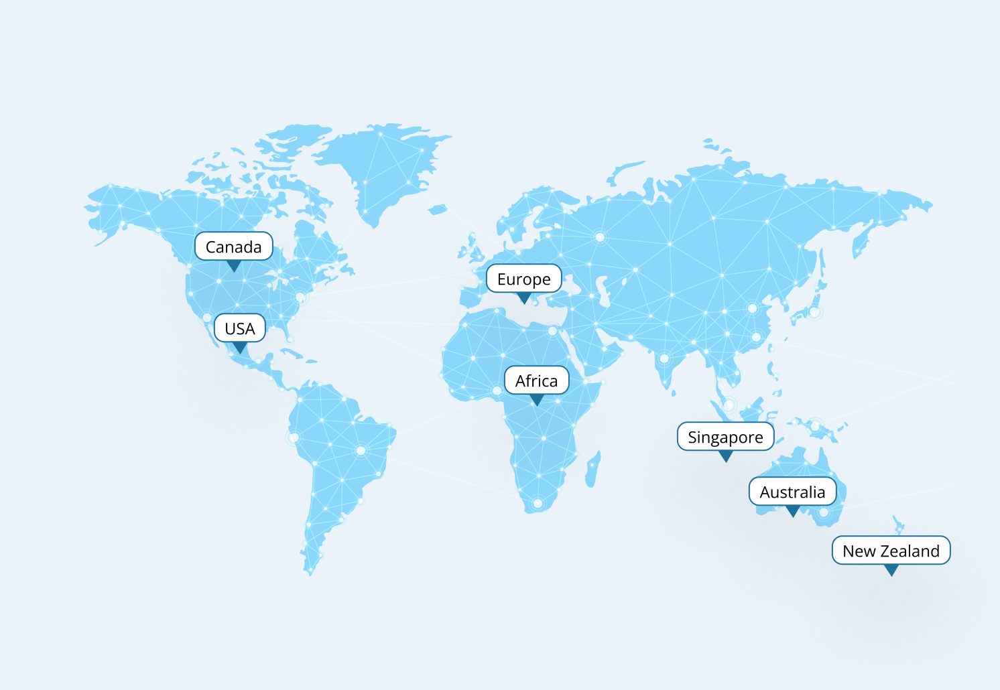
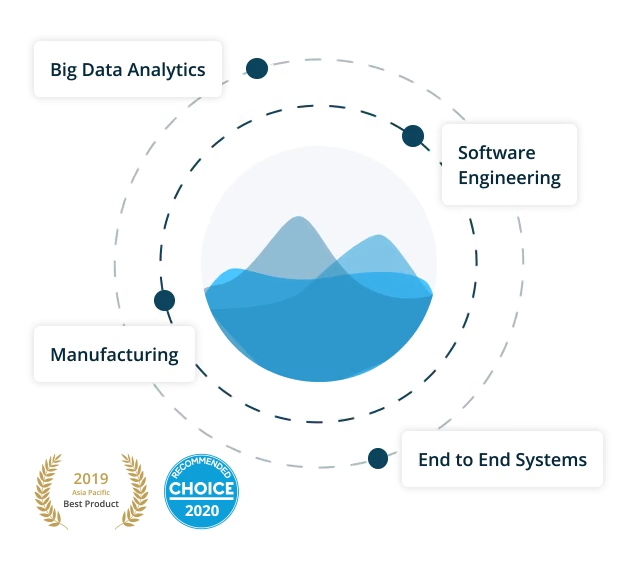

Building The Future Of Operational Intelligence
Helping organisations understand what is happening, why it matters and where action is required.
Construction projects generate enormous volumes of information every day.
- Operations are becoming more complex
- Workforces are growing.
- Equipment is becoming more connected.
- Environmental conditions are constantly changing.
- The challenge is no longer collecting information.
- The challenge is understanding what it means.
iottag exists to help organisations transform operational complexity into actionable intelligence that supports better decisions, safer operations and improved performance.
Our Purpose
We believe the most significant operational challenges often develop long before they become visible.

Risk builds gradually
Performance changes over time
Operational conditions evolve continuously
Our purpose is to help organisations understand these conditions earlier,
providing the visibility and operational understanding needed to act with confidence.
Built Around Real Operational Challenges
The platform was developed in response to real-world operational challenges faced across:

Tunnelling

Mining
Infrastructure
Construction
Critical Operations
Rather than developing technology in isolation, every solution has been shaped by the realities of demanding operational environments.
Engineering Meets Operational Understanding
Technology alone does not improve outcomes.
Successful solutions require a deep understanding of:
Operations
Safety
Productivity
Engineering
Human behaviour
Environmental conditions
By combining operational understanding with engineering expertise,
iottag helps organisations solve complex challenges in practical and measurable ways.
Designed For Resource And Materials Operations
- Major tunnel construction projects
- Underground mining operations
- Open-cut mining operations
- Civil infrastructure projects
- Bridge construction and refurbishment
- Airports and transport infrastructure
- Healthcare and critical facilities
- Heavy industrial operations
- Improved situational awareness
- Faster emergency response
- Enhanced workforce visibility
- Reduced operational blind spots
- Improved compliance and reporting
- Increased operational coordination
- Improved production awareness
- Better executive decision-making

Trusted In Operational Environments Where Reliability Matters
Organisations rely on iottag where visibility, accountability and operational awareness are critical.
From underground mining and tunnel construction through to healthcare and major infrastructure, our solutions support operational environments where decisions must be informed, timely and reliable.
By combining engineering expertise, purpose-built technology and long-term support, we help organisations deploy solutions with confidence and maintain them for the long term.


What Makes iottag Different
Operational Intelligence First
Technology designed to support better decisions.
Built Around Outcomes
Safety, productivity and performance.
Designed For Real Operations
Purpose-built for complex environments.
Open & Connected
Designed to work alongside existing technologies.
End-To-End Delivery
From engineering and deployment through to support and optimisation.
Looking Ahead
Operations will continue to become more connected,
more complex and more data-rich.
The organisations that succeed will be those that can understand operational conditions faster and respond more effectively.
Our mission is to help make that future possible.


Let's Build Smarter Operations Together
Because iottag controls both hardware and software, organisations benefit from:
- Faster innovation
- System-wide firmware updates
- Controlled version management
- Improved interoperability
- Long-term maintainability